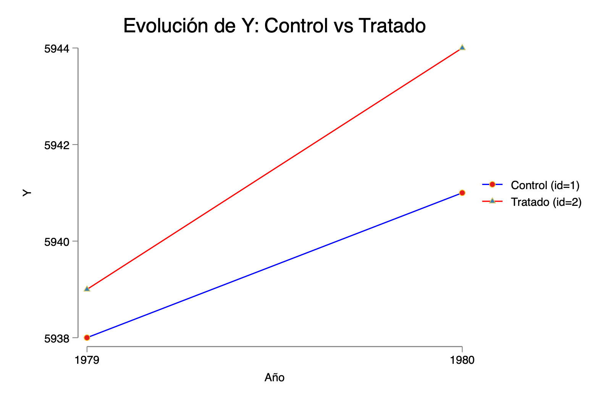
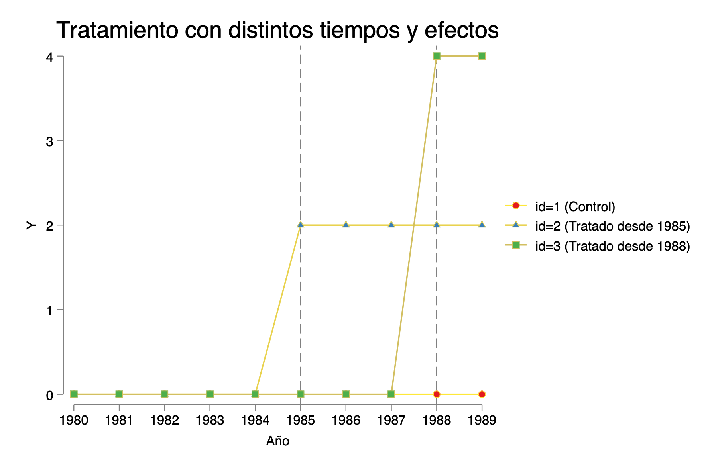

Capitulo 10 Problemas de TWFE y alternativas modernas en DiD
Contexto rápido
- ¿Qué verás? Cómo se comporta el estimador TWFE (two-way fixed effects) en distintos escenarios de DiD: 2×2, panel largo, más de dos unidades con heterogeneidad de efectos, y adopción escalonada.
- ¿Por qué importa? Con heterogeneidad y/o timing escalonado, TWFE puede promediar mal (incluso con pesos negativos), sesgando el estimador.
- ¿Cómo lo detectamos? Con la descomposición de Bacon y estudios de eventos.
- ¿Qué alternativas hay? Estimadores modernos: CSDID (Callaway & Sant’Anna), did_imputation (BJS), eventstudyinteract (Sun & Abraham), did_multiplegt, did2s, stackedev, etc.
💡 Nota de ejecución: Algunas secciones usan comandos/paquetes de SSC. Debes instalarlos al menos una vez (abajo incluyo la instalación con
ssc install …, replace).
Modelo básico 2×2 DiD
Explicación didáctica
Construimos un panel simple con 2 unidades (
id = 1,2) y 2 periodos (t = 1979, 1980).Tratamiento solo para
id==2en el año final (D = 1siid==2 & t==fin).Generamos un outcome
Ycon nivel por unidad (id), tendencia temporal (3*t) y un “empujón†de tratamiento cuandoD==1(tau=2).Graficamos la evolución de
Ypor grupo (control vs tratado).Estimamos DiD con:
xtreg Y D t, fe(FE de unidad + control lineal port), yreghdfe Y D, absorb(id t)(FE completos de unidad y de tiempo).
10.0.1 Código (copiar/pegar)
*----------------------------------------------------------
* Archivo DO: TWFE y Diferencias en Diferencias (DiD)
* modelo TWFE, DiD y Triple DiD
* Autor: Ana Maria Diaz
* ----------------------------------------------------------
* -------------------------
* 1. Modelo básico 2x2 DiD
* -------------------------
clear
* Definir parámetros flexibles
local unidades = 2
local inicio = 1979
local fin = 1980
local tiempo = `fin' - `inicio' + 1
local obs = `unidades' * `tiempo'
set obs `obs'
* Crear variables id y t (compatibles con años)
gen id = .
gen t = .
forvalues i = 1/`unidades' {
forvalues j = 0/`=`tiempo'-1' {
local obsnum = (`i' - 1)*`tiempo' + `j' + 1
replace id = `i' in `obsnum'
replace t = `inicio' + `j' in `obsnum'
}
}
sort id t
xtset id t
label variable id "Unidad"
label variable t "Año"
* Generar tratamiento (id==2 tratado en año final)
gen D = id==2 & t==`fin'
label variable D "Tratamiento (id==2 en año final)"
* Efecto del tratamiento
gen tau = cond(D==1, 2, 0)
gen Y = id + 3*t + tau*D
*gen Y = id + 3*t + tau*D + rnormal()
label variable Y "Variable dependiente"
twoway ///
(connected Y t if id==1, msymbol(circle) lcolor(blue)) ///
(connected Y t if id==2, msymbol(triangle) lcolor(red)) ///
, ///
title("Evolución de Y: Control vs Tratado") ///
xtitle("Año") ytitle("Y") ///
xlabel(`inicio'(1)`fin') ///
legend(order(1 "Control (id=1)" 2 "Tratado (id=2)")) ///
name(grafico1, replace)

Evolución de Y
Panel largo con 2 unidades y tratamiento “desde un año en adelante”
- Mantenemos 2 unidades, pero ampliamos a 1980–1990 (11 años).
- Tratamiento para
id==2desde 1985 en adelante (escalón). - Outcome
Ycon nivel por unidad + tendencia temporal + efecto de tratamiento (tau=5). - Estimamos
xtreg/reghdfey DiD oficial (xtdidreg) con diagnósticos de tendencias (estat trendplots,estat ptrends).
* ---------------------------------------------
* 2. Añadir más periodos de tiempo (10 por unidad)
* ---------------------------------------------
clear
local unidades = 2
local inicio = 1980
local fin = 1990
local tiempo = `fin' - `inicio' + 1
local obs = `unidades' * `tiempo'
set obs `obs'
* Crear variables id y t (funciona con años)
gen id = .
gen t = .
forvalues i = 1/`unidades' {
forvalues j = 0/`=`tiempo'-1' {
local obsnum = (`i' - 1)*`tiempo' + `j' + 1
replace id = `i' in `obsnum'
replace t = `inicio' + `j' in `obsnum'
}
}
sort id t
xtset id t
* Tratamiento desde cierto año en adelante para id==2
gen D = id==2 & t >= 1985 // ejemplo: tratamiento inicia en 1985
label variable D "Tratado"
* Efecto del tratamiento
gen tau = cond(D==1, 5, 0)
gen Y = id + 3*t + tau*D
label variable Y "Variable dependiente"
*Visualizar
twoway ///
(connected Y t if id==1, msymbol(circle) lcolor(blue)) ///
(connected Y t if id==2, msymbol(triangle) lcolor(red)) ///
, ///
title("Evolución de Y: Tratado vs. Control") ///
xlabel(`inicio'(1)`fin') ///
ylabel(, angle(horizontal)) ///
xtitle("Año") ///
ytitle("Y") ///
legend(order(1 "Control (id=1)" 2 "Tratado (id=2)")) ///
name(graficoY, replace)
xtreg Y D t, fe
reghdfe Y D, absorb(id t)
xtdidreg (Y) (D), group(id) time(t)
estat trendplots
estat ptrends

Más unidades, mismo año de inicio, efectos heterogéneos
Versión donde Y refleja solo el tamaño del efecto por tratado
- 3 unidades (id 1=control; id 2 y 3 tratados desde 1985), con distinto tamaño de efecto: 2 vs 4.
- Muestra que TWFE hace un promedio no trivial de estos efectos.
* --------------------------------------------------
* 3. Más unidades, mismo tiempo de tratamiento, distinto efecto
* --------------------------------------------------
clear
* Parámetros flexibles
local unidades = 3
local inicio = 1980
local fin = 1989
local tiempo = `fin' - `inicio' + 1
local obs = `unidades' * `tiempo'
set obs `obs'
* Crear variables id y t (con años reales)
gen id = .
gen t = .
forvalues i = 1/`unidades' {
forvalues j = 0/`=`tiempo'-1' {
local obsnum = (`i' - 1)*`tiempo' + `j' + 1
replace id = `i' in `obsnum'
replace t = `inicio' + `j' in `obsnum'
}
}
sort id t
xtset id t
* Tratamiento para id >= 2 desde t >= 1985
gen D = 0
replace D = 1 if id >= 2 & t >= 1985
label variable D "Tratado desde 1985 para id>=2"
* Variable dependiente con diferentes intensidades de tratamiento
cap drop Y
gen Y = 0
replace Y = cond(D == 1, 2, 0) if id == 2
replace Y = cond(D == 1, 4, 0) if id == 3
label variable Y "Variable dependiente"
sum Y if D == 1
* -------------------------------
* Visualización
* -------------------------------
twoway ///
(connected Y t if id == 1, msymbol(circle)) ///
(connected Y t if id == 2, msymbol(triangle)) ///
(connected Y t if id == 3, msymbol(square)) ///
, ///
xline(1985, lpattern(dash)) ///
xlabel(`inicio'(1)`fin') ///
legend(order(1 "id=1 (Control)" 2 "id=2 (Tratado - efecto 2)" 3 "id=3 (Tratado - efecto 4)")) ///
title("Efectos de distinto tamaño") ///
xtitle("Año") ///
ytitle("Y")
* -------------------------------
* Estimación
* -------------------------------
xtreg Y D t, fe
* Comparación con especificaciones alternativas
reg Y D // sin efectos fijos
reg Y D i.t // solo efectos fijos de tiempo
reg Y D i.id // solo efectos fijos de unidad
reg Y D i.t i.id // ambos (especificación correcta)
Grafico
3B) Versión con Y = id + t + efecto_heterogéneo
- Añadimos nivel por unidad y tendencia temporal a
Y, además de heterogeneidad en el efecto (2y4). - Refuerza la idea: β̂ TWFE no necesariamente es el ATT promedio.
*-----------------------------------------------
clear
* Parámetros flexibles
local units = 3
local start = 1980
local end = 1989
local time = `end' - `start' + 1
local obsv = `units' * `time'
set obs `obsv'
* Crear variables de panel y tiempo
gen id = .
gen t = .
forvalues i = 1/`units' {
forvalues j = 0/`=`time'-1' {
local obsnum = (`i' - 1)*`time' + `j' + 1
replace id = `i' in `obsnum'
replace t = `start' + `j' in `obsnum'
}
}
sort id t
xtset id t
label variable id "Unidad (panel)"
label variable t "Año"
* Tratamiento para id >= 2 desde t >= 1985
gen D = 0
replace D = 1 if id >= 2 & t >= 1985
label variable D "Tratamiento desde 1985 para id >= 2"
* Generar outcome con efectos heterogéneos
cap drop Y
gen Y = 0
replace Y = id + t + cond(D == 1, 0, 0) if id == 1
replace Y = id + t + cond(D == 1, 2, 0) if id == 2
replace Y = id + t + cond(D == 1, 4, 0) if id == 3
label variable Y "Variable dependiente (Y)"
* ----------------------------------
* Gráfico adaptado para años reales
* ----------------------------------
twoway ///
(connected Y t if id == 1, msymbol(circle)) ///
(connected Y t if id == 2, msymbol(triangle)) ///
(connected Y t if id == 3, msymbol(square)) ///
, ///
xline(1985, lpattern(dash)) ///
xlabel(`start'(1)`end') ///
legend(order(1 "id=1 (Control)" 2 "id=2 (Tratado - efecto 2)" 3 "id=3 (Tratado - efecto 4)")) ///
title("Evolución de Y con tratamiento heterogéneo") ///
xtitle("Año") ///
ytitle("Y")
* -------------------------------
* Estimación
* -------------------------------
xtreg Y D t, fe
* Comparación con especificaciones alternativas
reg Y D // sin efectos fijos
reg Y D i.t // solo efectos fijos de tiempo
reg Y D i.id // solo efectos fijos de unidad
reg Y D i.t i.id // ambos (especificación correcta)
Grafico
Más unidades, distinto tiempo de tratamiento (staggered) y distinto efecto
- id=2 se trata desde 1985; id=3 desde 1988 (escalonado).
- Los tamaños de efecto difieren (2 vs 4).
- Estimamos varias especificaciones y usamos Bacon decomposition para ver qué comparaciones y con qué peso componen el β̂ TWFE.
- Finalmente, estimamos pares 2×2 (id 1–2 e id 1–3) para ver los componentes del promedio.
* --------------------------------------------------
* 4. Más unidades, distinto tiempo de tratamiento y distinto efecto
* --------------------------------------------------
clear
* Parámetros flexibles
local unidades = 3
local inicio = 1980
local fin = 1989
local tiempo = `fin' - `inicio' + 1
local obs = `unidades' * `tiempo'
set obs `obs'
* Crear variables id y t con años reales
gen id = .
gen t = .
forvalues i = 1/`unidades' {
forvalues j = 0/`=`tiempo'-1' {
local obsnum = (`i' - 1)*`tiempo' + `j' + 1
replace id = `i' in `obsnum'
replace t = `inicio' + `j' in `obsnum'
}
}
sort id t
xtset id t
* Tratamiento escalonado: id 2 desde 1985, id 3 desde 1988
gen D = 0
replace D = 1 if id == 2 & t >= 1985
replace D = 1 if id == 3 & t >= 1988
label variable D "Tratamiento escalonado"
* Efectos distintos por grupo y tiempo
gen Y = 0
replace Y = D * 2 if id == 2 & t >= 1985
replace Y = D * 4 if id == 3 & t >= 1988
label variable Y "Variable dependiente"
* ----------------------------------
* Gráfico adaptado para años reales
* ----------------------------------
twoway ///
(connected Y t if id == 1, msymbol(circle)) ///
(connected Y t if id == 2, msymbol(triangle)) ///
(connected Y t if id == 3, msymbol(square)) ///
, ///
xline(1985 1988, lpattern(dash)) ///
xlabel(`inicio'(1)`fin') ///
legend(order(1 "id=1 (Control)" 2 "id=2 (Tratado desde 1985)" 3 "id=3 (Tratado desde 1988)")) ///
title("Tratamiento con distintos tiempos y efectos") ///
xtitle("Año") ///
ytitle("Y")

Grafico
* ----------------------------------
* Estimaciones
* ----------------------------------
reg Y D
reg Y D i.t
reg Y D i.id
reg Y D i.t i.id
xtreg Y D i.t, fe
reghdfe Y D, absorb(id t)- Descomposición de Bacon